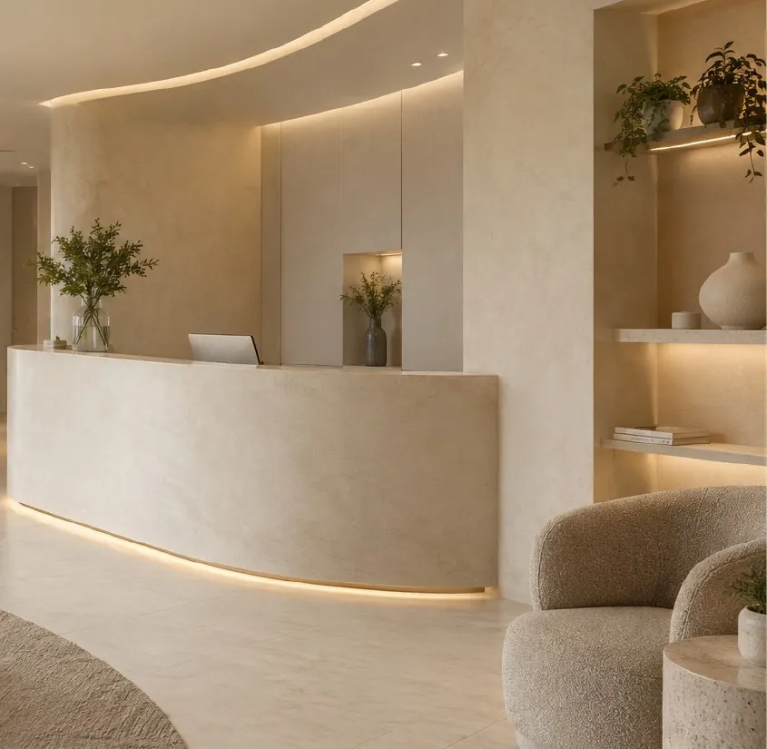

Qué es
Un gel compatible con tu piel que devuelve soporte, contorno o hidratación profunda en zonas puntuales: labios, ojeras, pómulos, mentón o mandíbula. El objetivo es armonía, no cambiar quién eres.
Duración
30–45 minutos
Sesiones
Una sesión; dura de 9 a 18 meses según la zona
Recuperación
Puede haber inflamación leve 24–72 horas
Los tiempos son orientativos. En tu valoración te decimos qué aplica a tu caso.
Para quién
¿Es para ti?
Evaluamos antes de recomendar.
En detalle
¿Para qué zonas sirve el ácido hialurónico?
- Labios. Definir el contorno, hidratar o dar un volumen sutil.
- Ojeras. Suavizar la sombra cuando la ojera es un hundimiento.
- Pómulos y sienes. Devolver soporte donde el rostro lo fue perdiendo.
- Mentón y mandíbula. Perfilar y dar proporción al tercio inferior.
Cuando el objetivo es el rostro completo y no una zona suelta, lo planeamos como una armonización facial.
¿Cuánto ácido hialurónico voy a necesitar?
Se habla mucho de “1 ml”, que es una jeringa pequeña. Cuánto hace falta depende de la zona, de cuánto soporte perdiste y del resultado que buscas. Por eso no cotizamos por mililitro a ciegas: primero miramos tu rostro en reposo y en movimiento, y luego te proponemos un plan.
Nuestro criterio es sencillo: menos, mejor puesto. Preferimos quedarnos cortos y completar después que pasarnos.
Antes de un evento
Puede haber inflamación leve o algún morado durante 24 a 72 horas. Si tienes un grado, un matrimonio o una foto importante, agenda con un margen de por lo menos dos semanas.
Y si alguna vez hiciera falta, el ácido hialurónico se puede disolver con una enzima llamada hialuronidasa. Es una de las razones por las que lo preferimos para empezar.
Preguntas frecuentes
Lo que suelen preguntarnos.
¿Se puede revertir?+
Sí. El ácido hialurónico se puede disolver con una enzima si alguna vez fuera necesario.
¿Se nota que me hice algo?+
Trabajamos por capas y en poca cantidad. Lo que la gente suele notar es que te ves bien, no qué te hiciste.
¿Cuánto producto voy a necesitar?+
Lo definimos en la valoración, después de analizar tu rostro en reposo y en movimiento.
¿Cuánto dura el ácido hialurónico?+
Entre 9 y 18 meses, según la zona, el producto y cómo lo procesa tu cuerpo. En las zonas con mucho movimiento, como los labios, suele durar menos.
¿Cuánto cobran por inyectar ácido hialurónico en Pereira?+
Depende de las zonas y de la cantidad de producto que necesites. Te damos el valor exacto en la valoración, después de ver tu rostro y antes de empezar.
Del blog
Para leer antes de tu cita.
¿Cuánto rinde 1 ml de ácido hialurónico en la cara?
Es menos volumen del que imaginas. Para qué puede alcanzar, por qué la cantidad se define viéndote en persona y qué pasa si algo no queda bien.
Leer →
Cómo elegir médico estético en Pereira: 4 verificaciones
Dos consultas públicas que haces desde el celular, preguntas para la valoración y las señales que deberían hacerte parar. Sirve para cualquier lugar, también para nosotros.
Leer →También te puede interesar
Toxina botulínica
Relaja las líneas de expresión sin quitarte la expresión.
20–30 minSin incapacidadVer tratamiento →Firmeza y colágenoBioestimuladores de colágeno
Tu piel vuelve a producir lo que necesita.
1–3 sesionesCambio progresivoVer tratamiento →Hidratación y luzSkinboosters
Hidratación profunda que se ve en la luz de tu piel.
3 sesionesSin incapacidadVer tratamiento →
Valoración médica
Conversemos sobre lo que quieres cuidar.
Primero te escuchamos. Luego recomendamos.